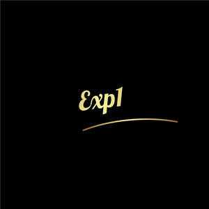

Trade Mark Journal No.2025/011 14 March 2025
UK00004168875 4 March 2025 (9,16,21,24,28,44)

- Class 9
- Thermometers; Infrared thermometers; Infra-red thermometers; Meat thermometers; Candy thermometers; Sweet thermometers; Digital meat thermometers; Laboratory thermometers; Mercury thermometers [other than for medical use]; Temperature gauges; Temperature sensors; Water temperature gauges; Thermosensitive temperature indicator strips; Temperature measuring instruments; Household thermometers; Remote temperature sensors; Exhaust gas temperature gauges; Temperature indicators; Air temperature sensors; Quartz glass thermometers; Temperature logging apparatus; Pyrometers; Resistance oscillator thermometers; Technical thermometers; Hydrometers; Infrared thermometers, not for medical purposes; Temperature controllers; Temperature control apparatus [thermostats]; Temperature switches; Hygrometers; Clinometer; Refractometers; Sensors for determining temperature; Temperature control apparatus [thermostats] for machines; Resistance temperature detectors; Temperature indicating apparatus; Humidity sensors; Temperature meters for scientific use; Thermocouples; Temperature measuring apparatus for industrial use; Thermistor probes; Temperature measuring apparatus for scientific use; Humidity measuring apparatus; Thermometers not for medical use; Thermal sensors [thermostats]; Digital thermometers, other than for medical purposes; Thermostat wires; Heat sensors; Eye refractometers; Temperature meters for industrial use; Instruments for temperature control; Temperature monitors [valves] for central heating radiators; Temperature measuring apparatus for household use; Electronic thermometers, other than for medical use; Gauges with digital readout; Thermostat controllers; Pyroelectric infrared sensors; Temperature monitors for scientific use; Manometers; Digital thermometers, not for medical purposes; Thermocouple heads; Temperature controllers apparatus for machines; Thermocouple wires; Temperature indicator labels, not for medical purposes; Water temperature regulators; Infrared sensors; Acid hydrometers; Temperature sensing apparatus for scientific use; Temperature control apparatus [thermostats] for vehicles; Temperature meters for household use; Spectrophotometer; Electronic temperature recorders, other than for medical use; Temperature controlling apparatus; Dewing sensors; Temperature monitors for industrial use; Thermistors; Optical fibre temperature probes, other than for medical use; Thermometers, not for medical purposes; Thermometers not for medical purposes; Environmental test chamber (temperature simulation equipment); Oil-water thermistors; Thermocouple blocks; Computer apparatus for remote meter reading; Temperature display units; Electronic temperature monitors, other than for medical use; Infrared detectors; Alarm sensors for refrigerators; Infrared gun sighting apparatus; Heat detectors; Calculators; Hand-held calculators; Handheld graphing calculators; Electronic calculators; Pocket calculators; Electronic pocket calculators; Electronic desk calculators; Pocket-sized electronic calculators; Cases for pocket calculators; Abacuses; Slide-rules; Protractors [measuring instruments]; Calculating devices; Pocket computers for note-taking; Palmtop computers; Downloadable screen savers for computers; Calculating machines; Software programmable microprocessors; Mathematical instruments; Clock generators for computers; Calculating scales; Hand-held computers; Computer keypads; Software for computers; Multimeters; Cartridges [software] for use with computers; Micro-computers; Simulation software for use in digital computers; Computer whiteboards; Computer software programs for spreadsheet management; Personal computers incorporating dietary aid computer software; Compasses [measuring instruments]; Games software for use with computers; Hand-held electronic dictionaries; Electronic notepads; Computer software for producing financial models; Time measuring instruments (not including clocks and watches); Tool measuring instruments; Input devices for computers; Notebook computers; Mainframes [computers]; Computer styluses; Handheld computers; Computer whiteboard software; Programmable timers; Interactive entertainment software for use with computers; Programs for computers; Voltmeters; Computer software for communicating with users of hand-held computers; All-in-one computers; Computer software designed to estimate resource requirements; Trackballs [computer peripherals]; Price calculating machines; Downloadable screen savers for phones; Computer software designed to estimate costs; Add-in cards for micro computers; Computers; Software for tablet computers; Accounting machines; Downloadable application software for smart phones; Microcomputers; Computer software applications, downloadable; Downloadable computer software applications; Computer software development tools; Rulers [measuring instruments]; Computer hardware modules for use in Internet of Things electronic devices; Programs (Computer -) [downloadable software]; Computer programs [downloadable software]; Oscilloscopes; Interactive entertainment software for use with personal computers; Computer hardware modules for use in electronic devices using the Internet of Things [IoT]; Software compiling tools; Hand-held electronic scales; Downloadable computer utility programs; Downloadable smart phone applications (software); Electronic components for computers; Chromatography instruments for scientific or laboratory use; Downloadable computer software for designing and modelling of three dimensional printable products; Downloadable computer utility software; Computer software for electronic bulletin boards; Digital notepads; Interfaces for computers.
- Class 16
- Pen nibs; Ball-point pen and pencil sets; Ballpoint pen refills; Pen and pencil holders; Pen or pencil holders; Stands for pen and pencil; Pen refills; Ballpoint pens; Pen ink refills; Pen and pencil boxes; Ball-point pens; Pen cartridges; Pens; Pen and pencil cases; Ink for pens; Ink pens; Pen ink cartridges; Felt-tip pens; Pen calligraphy copybooks; Fountain pen ink cartridges; Pen trays; Pen holders; Ink for fountain pens; Marking pen refills; Pen boxes; Rollerball pens; Pen clips; Steel pens [styluses or stencil pens]; Marker pens; Pen rests; Pen stands; Pen wipers; Inkless pens; Refills for ballpoint pens; Ink pen refill cartridges; Balls for ball-point pens; Brush pens; Pen sets; Fountain pens; Highlighter pens; Tips for ballpoint pens; Drawing pens; Pen cases; Ink cartridges for fountain pens; Pocket pen shields; Ink cartridges for pens; Ball pens; India ink pens; Stands for pens and pencils; Skin marker pens; Marking pens; Pens for marking; Fiber-tip pens; Etching pens; Stylographic pens; Colouring pens; Correction pens; Coloured pens; Marking pens [stationery]; Fibre-tip pens; Colour pens; Steel pens; Gel roller pens; Felt writing pens; Pencil eraser refills; Writing ink; Fibertip pens; Ball point pens; Ink erasers; Roller ball pens; Film pens; Pencil erasers; Porous tip pens; Felt tip pens; Highlighting pens; Felt pens; Calligraphy ink; Glue pens for stationery purposes; Stands for pens; Felt marking pens; Writing brush calligraphy copybooks; Artists' pens; Pencil grips; Ink; Boxes for pens; Notebook paper; Writing paper pads; Drawing ink; Ink for writing instruments; Ink sticks; Scribble pads; Typewriter paper; Ballpoint refill cartridges; Pencil sharpeners; Sharpeners (Pencil -); Propelling pencil refills; Glitter pens for stationery purposes; Writing brush for calligraphy; Pencil lead refills; Pencil holders; Cartridges (Ink -) for writing instruments; Ink pads; Pencils; Ink sticks (sumi); Calligraphy paper; Retractable pencils; Paper book markers; Pencil trays; Pencil caps; Drawing pencils; Pencil cups; Blank paper notebooks; Cases for pens; Pencils with erasers; Seal ink pads; Writing paper holders; Scribbling pads; Writing paper; Stamp pad inks; Nibs for writing instruments; Pencil ornaments [stationery]; Pencil ornaments (stationery); Writing brush holders; Writing brush for Shodo; Writing brushes for calligraphy; Drawing paper.
- Class 21
- Cookware; Steamers [cookware]; Aluminium cookware; Cookware [pots and pans]; Tableware, cookware and containers; Cookware for use in microwave ovens; Bakeware; Griddles [cooking utensils]; Cookware and tableware, except forks, knives and spoons; Non-electric griddles [cooking utensils]; Griddles [non-electric cooking utensils]; Spatulas [kitchen utensils]; Aluminium bakeware; Cookware, except forks, knives and spoons; Cooking utensils; Cooking pots and pans [non-electric]; Non-electric cooking pots and pans; Cooking pans; Kitchen utensils of silicon; Grills [cooking utensils]; Skillets; Tenderizers [kitchen utensils]; Kitchen utensils; Ovenware; Cooking pans [non-electric]; Non-electric cooking pans; Cooking utensils, non-electric; Household or kitchen utensils; Oven-to-table tableware; Molds [kitchen utensils]; Baking utensils; Basting spoons [cooking utensils]; Dishes [household utensils]; Cooking pots for use in microwave ovens; Simmer rings [cooking utensils]; Graters [household utensils]; Aluminium moulds [kitchen utensils]; Saucepans; Moulds [kitchen utensils]; Wire baskets [cooking utensils]; Saucepans (Earthenware -); Earthenware saucepans; Cooking graters; Grills in the nature of cooking utensils; Bakeware [not toys]; Ceramic tableware; Turners (kitchen utensil); Cooking pots [non-electric]; Graters [non-electric household utensils]; Pressure cooking saucepans, non-electric; Non-electric pressure cooking saucepans; Skillets (Non-electric -); Cooking pots; Tableware; Frying pans [non-electric]; Non-electric frying pans; Household utensils; Sieves [household utensils]; Trivets [table utensils]; Cooking pots, non-electric / Non-electric cooking pots; Mixing spoons [kitchen utensils]; Dishware; Scourers for saucepans; Tableware, other than knives, forks and spoons; Skewers (cooking utensil); Portable pots and pans for camping; Kitchen graters; Dinnerware; Cooking utensils for barbecue use; Cooking utensils for use with domestic barbecues; Kitchen utensils, not of precious metal; Disposable paperboard bakeware; Sifters [household utensils]; Bone china tableware [other than cutlery]; Couscous cooking pots, non-electric; Spatulas for kitchen use; Dishes for microwave ovens; Roaster pans; Tortilla presses, non-electric [kitchen utensils]; Metal pans; Cooking strainers; Tableware, except forks, knives and spoons; Frying pans; Pans (Frying -); Egg separators [kitchen utensils]; Dinnerware of porcelain; Non-electric rice cooking pots; Stir-fry pans; Jewelry dishes; Tableware of porcelain; Cinder sifters [household utensils]; Shallow pans for cooking.
- Class 24
- Cloth; Linen cloth; Woolen cloth; Silk cloth; Silk [cloth]; Gauze [cloth]; Woollen cloth; Cloth handkerchiefs; Cloth napkins; Jute cloth; Non-woven cloth; Taffeta [cloth]; Crepe cloth; Vinyl cloth; Hemp cloth; Cloth doilies; Rubberized cloth; Table cloth of textile; Flax cloth; Loden cloth; Cloth bunting; Denim [cloth]; Rubberised cloth; Cheese cloth; Billiard cloth; Prayer cloth; Printed calico cloth; Calico cloth (Printed -); Frieze [cloth]; Sail cloth; Cloth banners; Cloth flags; Trellis [cloth]; Marabouts [cloth]; Cloth pennants; Cloths; Cloth coasters; Zephyr [cloth]; Labels of cloth; Cloth labels; Labels [cloth]; Felt cloth; Bolting cloth; Cotton cloths; Filtering cloth; Make-up (Napkins for removing -) [cloth]; Cloth napkins for removing make-up; Billiard cloth [baize]; Quilts made of terry cloth; Embroidery (Traced cloth for -); Traced cloth for embroidery; Cloth napkins for removing makeup; Kitchen towels of cloth; Gummed waterproof cloth; Rubberized cloths; Curtain holders of cloth; Cheviots [cloth]; Tartan bolting cloth; Table cloths of textile; Sponge cloths for textile use; Sponge cloths [textile piece goods]; Plastic table cloths; Face cloths of textile; Woven cloth with breathable polyurethane coating; Woven cloth with breathable polyurethane coating for water proof garments; Woven cloth with breathable polyurethane coating sold in the piece; Gummed cloth, other than for stationery; Waterproof cloths; Markers [labels] of cloth for textile fabrics; Table cloths made of textile; Nap raised cloth; Cloth with a raised nap; Japanese ceremonial wrapping cloth (Fukusa); Iron-on cloth labels.
- Class 28
- Toys; Toys, games, and playthings; Toys and playthings for pets; Ride-on toys; Cuddly toys; Puzzles [toys]; Toys for sandpits; Plush toys; Stuffed toys; Inflatable toys; Toys for babies; Noisemakers [toys]; Wind-up toys; Toys for pets; Fidget toys; Toys for use in perambulators; Plastic toys; Radio-controlled toys; Scooters [toys]; Crib toys; Toys for animals; Mobiles [toys]; Toys, games and playthings for pet animals; Pet toys; Windup toys; Rattles [toys]; Toys for cats; Toys for infants; Wooden toys; Model cars [toys or playthings]; Toys and playthings for pet animals; Toys for dogs; Toy dolls; Educational toys; Bendable toys; Outdoor toys; Toy playsets; Models being toys; Infant toys; Bath toys; Dog toys; Sandbox toys; Bathtub toys; Action figures [toys or playthings]; Electronic toys; Inflatable ride-on toys; Whistles [toys]; Sand toys; Controllers for toys; Soft toys; Miniature car models [toys or playthings]; Bouncing toys; Cloth toys; Drones [toys]; Musical toys; Tricycles for infants [toys]; Toy figurines; Mechanical toys; Toy furniture; Toys for birds; Play mats for use with toy vehicles [playthings]; Wheeled toys; Clockwork toys; Developmental toys; Fluffy toys; Plastic toys for use in the bath; Crib mobiles [toys]; Stuffed animals [toys]; Rocking toys; Inflatable bath toys; Stacking toys; Fabric toys; Modular toys; Water toys; Plastic models being toys; Model toys; Whack-a-mole toys for pets; Drawing toys; Play mats incorporating infant toys [playthings]; Toy prams; Action toys; Stuffed and plush toys; Stuffed plush toys; Plush stuffed toys; Battery-operated action toys; Sketching toys; Squeezable squeaking toys; Children's toys; Smart toys; Toy bicycles; Toy tableware; Whistling toys; Construction toys; Clockwork toys [of plastics]; Push toys; Articles of clothing for toys; Toy wheelbarrows; Squeeze toys; Talking toys; Toy bakeware and toy cookware; Bendy balls being toys; Toy mobiles; Toy xylophones; Stuffed bean-filled toys; Clothing for toy figures; Toy animals; Pull toys; Chewing toys for parrots; Toy cars; Toy strollers; Water-squirting toys; Toys for pet animals; Toy balloons; Assembly toys; Intelligent toys; Toy scooters; Toy hats; Music box toys; Punching toys; Toy harmonicas; Toy cookware; Toy automobiles; Smart plush toys; Toy robots; Toy tools; Toy weapons; Xylophones being musical toys; Toys in the form of puzzles; Novelty toys for parties; Toy glockenspiels; Inflatable pool toys; Soft sculpture toys; Toy bakeware; Toy pushchairs; Toy balls; Costumes being childrens playthings; Money guns being toys; Toy airplanes; Puzzle mats [toys]; Toy vehicles; Playthings.
- Class 44
- Beauty salons; Salons (Beauty -); Beauty care; Beauty treatment; Beauty salon services; Salon services (Beauty -); Beauty consultation; Beauty counselling; Beauty spa services; Beauty consultancy; Hygienic and beauty care; Services of a hair and beauty salon; Beauty care for animals; Beauty care of feet; Pet beauty salon services; Human hygiene and beauty care; Beauty care services; Beauty therapy services; Hygienic and beauty care for animals; Beauty treatment services; Facial beauty treatment services; Hygienic and beauty care for humans; Hygienic and beauty care services; Beauty salons for wig cutting; Beauty therapy treatments; Beauty care for human beings; Beauty treatment services especially for eyelashes; Hygienic and beauty care for human beings; Beauty consultation services; Beauty information services; Consultancy in the field of body and beauty care; Beauty advisory services; Beauty consultancy services; Rental of equipment for human hygiene and beauty care; Beauty care services provided by a health spa; Provision of hygienic and beauty care services; Information relating to beauty care; Information relating to beauty; Advisory services relating to beauty care; Consultation services relating to beauty care; Advisory services relating to beauty; Consultancy services relating to beauty; Providing information relating to beauty salon services; Advisory services relating to beauty treatment; Providing information about beauty; Consultancy provided via the Internet in the field of body and beauty care; Rental of machines and apparatus for use in beauty salons or barbers' shops; Cosmetic make-up services; Skin care salons; Hair salon services for women; Cosmetic treatment services for the body, face and hair.
Sulo E-Commerce Ltd